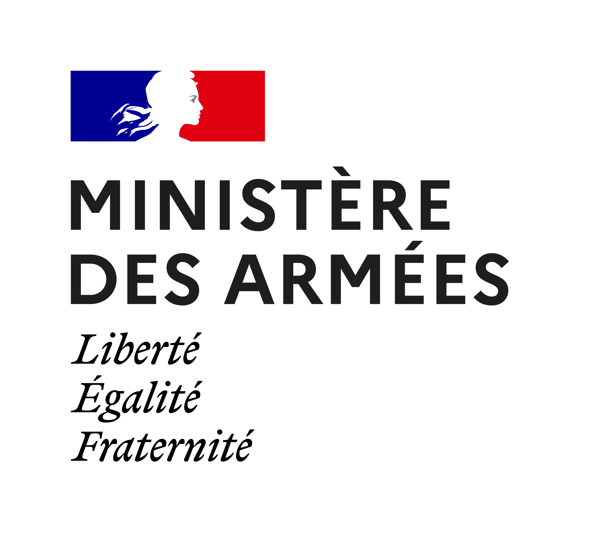
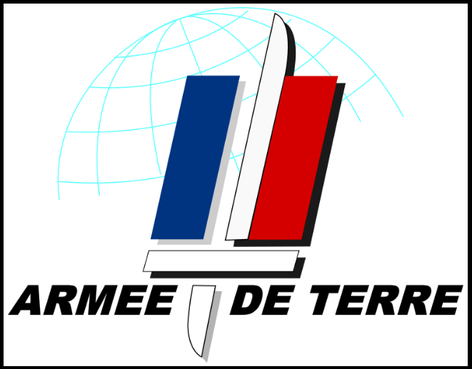

Le Ministère des Armées
// en clair
Mon employeur est l'armée de Terre, qui fait elle-même partie du Ministère des Armées. Avant de présenter ma brigade, voici le cadre dans lequel elle travaille.
Le Ministère des Armées est le ministère chargé de la défense de la France. Il est dirigé par le ou la ministre des Armées, et rassemble les trois armées, des services communs et des directions qui les soutiennent. Environ 264 000 personnes y travaillent, dont environ 76 % de militaires et 24 % de civils, auxquelles s'ajoutent plus de 41 000 réservistes (chiffres 2026).
// protéger
Protéger le territoire, la population et les intérêts de la France.
// s'engager avec les alliés
Remplir les engagements de la France dans l'OTAN et en Europe en matière de défense.
// service public
Intervenir en France et à l'étranger pour porter secours, en situation normale ou en crise.
Comment il est organisé
Ministre des Armées
État-major des armées : dirigé par le chef d'état-major des armées, il prépare et conduit les opérations militaires.
Direction générale de l'armement (DGA) : conçoit, achète et teste les équipements des armées.
Secrétariat général pour l'administration (SGA) : ressources humaines, finances, droit, politique immobilière.
Armée de Terre : environ 112 000 militaires. C'est mon employeur.
Marine nationale : environ 35 000 marins.
Armée de l'Air et de l'Espace : environ 29 000 militaires.
À côté des trois armées, des services travaillent pour toutes à la fois : par exemple le service de santé, le service de l'énergie, la DIRISI (réseaux et systèmes d'information) et le commandement de la cyberdéfense (COMCYBER). La Gendarmerie nationale, elle, dépend du ministère de l'Intérieur, mais travaille avec les armées.

L'armée de Terre
L'armée de Terre est la composante du Ministère des Armées qui agit au sol. C'est la plus importante des trois armées : environ 112 000 militaires et 8 000 civils, avec un âge moyen d'environ 32 ans (chiffres 2026). Elle protège le territoire national, par exemple avec l'opération Sentinelle, intervient à l'étranger, et forme des partenariats avec les armées alliées.
Sa stratégie actuelle s'appelle « l'armée de Terre de combat » et repose sur quatre idées : protéger, agir, innover, et être capable de durer dans les engagements les plus difficiles.

112 000
militaires
8 000
civils
26 000
réservistes opérationnels (2024)
32 ans
âge moyen
Les quatre piliers de l'armée de Terre de combat
Protéger
Servir la France et contribuer à la cohésion nationale.
Agir
Produire des effets dans les trois espaces stratégiques (terrestre, cyber, spatial).
Innover
Rester agile et préparer les conflits de demain.
Être et durer
Se préparer aux engagements les plus durs.
De la compagnie à la division
L'armée de Terre est organisée en unités emboîtées, de la plus petite à la plus grande (ordres de grandeur) :
environ 100 à 150 personnes, commandée par un capitaine
environ 1 000 personnes, commandé par un colonel
plusieurs milliers de personnes, commandée par un général de brigade
environ 20 000 personnes, commandée par un général de division
Ma brigade, la BRCE, est une brigade spécialisée : elle ne combat pas en première ligne, elle cherche et analyse l'information dont les autres unités ont besoin.

La BRCE
Ministère des Armées › armée de Terre › CAPR › BRCE › état-major › BSIC
Informations générales
- nom
- Brigade de Renseignement et Cyber-Électronique (BRCE)
- secteur
- Armée de Terre
- lieu
- Caserne Stirn, Strasbourg
- taille
- Restreinte
Détails de l'alternance
- poste
- Assistance à la création d'architectures sécurisées complexes ainsi qu'à leur mise en place. Assistance aux audits de sécurité et sécurisation des architectures.
- équipe
- État-major de la BRCE
- durée
- septembre 2026 à juillet 2027
Héritière du commandement du renseignement des forces terrestres, la brigade de renseignement et cyber-électronique a été créée en 2024 et son état-major est stationné à la caserne Stirn à Strasbourg. Dans le cadre de la transformation de l'armée de Terre de combat, la brigade (BRCE) est subordonnée au commandement des actions dans la profondeur et du renseignement (CAPR).
Outre l'état-major, la brigade comprend 3 régiments :
- le 2e régiment de Hussards (renseignement d'origine humaine, ROHUM) ;
- le 44e régiment de transmissions (renseignement d'origine électromagnétique, ROEM, stratégique et opératif) ;
- le 54e régiment de transmissions (ROEM tactique).
On y trouve également le centre de formation initiale des militaires du rang du renseignement, le 151e régiment d'infanterie et la 785e compagnie de guerre électronique.
La brigade est formée et entraînée pour répondre au contrat opérationnel de l'armée de Terre. Elle possède des capacités de recherche spécialisées dans le renseignement d'origine humaine (2e régiment de Hussards) et électromagnétique et cyber (44e RT, 54e RT et 785e CGE).
Le BSIC [À COMPLÉTER : nom complet du BSIC] a pour mission principale de concevoir et de fournir les systèmes d'information et de communication à l'état-major de la BRCE lors de son déploiement. Il a également une mission permanente visant à assurer son fonctionnement au quartier.

Signification de l'insigne
L'insigne de la brigade de renseignement est composé d'un écu bleu (couleur des transmissions ; il existe d'autres couleurs comme le vert, couleur de la cavalerie, et le rouge, couleur de l'artillerie), d'un globe terrestre et de foudres. Le globe est surmonté d'un hibou grand-duc.
- La vision nocturne. Le grand-duc voit dans l'obscurité totale. C'est une métaphore directe du renseignement : percevoir ce que l'adversaire cherche à cacher.
- La discrétion et le silence. Le grand-duc chasse en silence, sans se faire repérer, comme la discrétion absolue des unités de renseignement, humain ou électromagnétique.
- La sagesse. Le hibou est l'attribut de Minerve/Athéna, déesse de la sagesse et de la stratégie. Le renseignement, c'est l'art de transformer l'information brute en analyse utile à la décision.
- La vision à 270 degrés. Le grand-duc tourne la tête sur un angle très large, ce qui symbolise la surveillance tous azimuts, y compris dans les domaines cyber et électromagnétique.
- Le prédateur patient. Il observe longuement avant de frapper avec précision, comme la boucle renseignement-feux que la BRCE cherche à accélérer avec le CAPR.
Les deux étoiles en haut à gauche de l'insigne sont le symbole des brigades.
// devise de la brigade
« Par Saint-Raphaël, vive le renseignement et par Saint-Gabriel, vive les transmissions ! »
Pourquoi l'alternance
[À COMPLÉTER : pourquoi tu as choisi l'alternance pour la 3e année et ce que tu en attends]
Missions
[À COMPLÉTER : ta mission principale, en une ou deux phrases simples]
[À COMPLÉTER : mission]
[À COMPLÉTER : mission]
[À COMPLÉTER : mission]
[À COMPLÉTER : mission]
Outils et technologies
Compétences du BUT mobilisées
[À COMPLÉTER : les compétences du BUT (C1 à C5) que l'alternance te fait travailler, avec un exemple concret pour chacune]
Voir aussi la page BUT 3 et le tableau des compétences.
Réalisations
[À COMPLÉTER : une ou deux réalisations dont tu es fière, avec le contexte, ce que tu as fait et le résultat. Attention aux informations confidentielles.]
Journal de bord
- [MOIS ANNÉE]
[Titre]
[À COMPLÉTER : ce qui s'est passé ce mois-là]
- [MOIS ANNÉE]
[Titre]
[À COMPLÉTER : ce qui s'est passé ce mois-là]
Bilan
[À COMPLÉTER : ce que l'alternance t'a apporté, ce que tu as appris, difficultés rencontrées, et la suite]